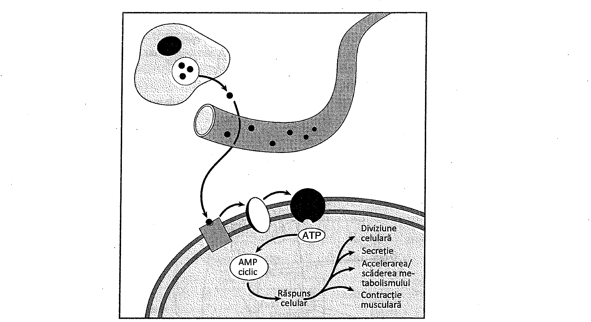
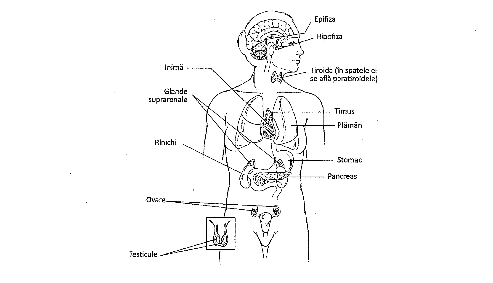
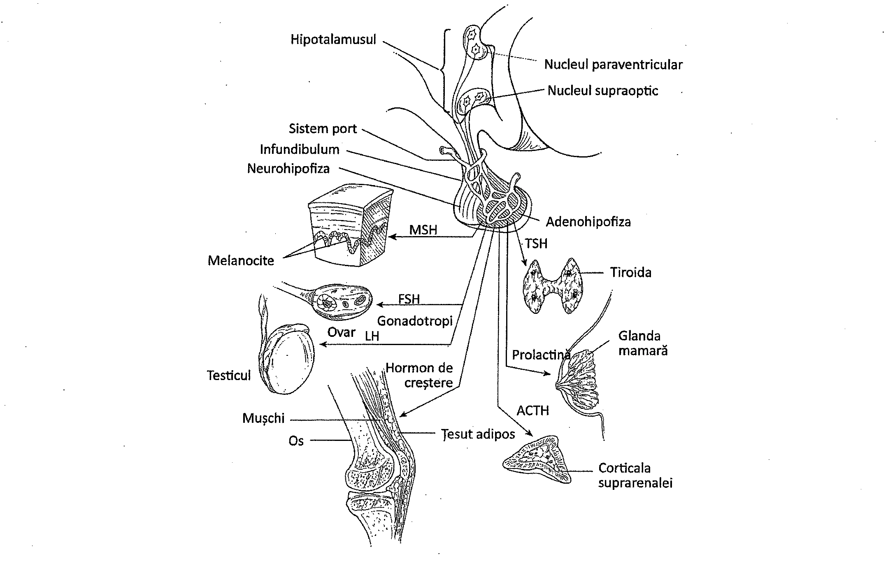
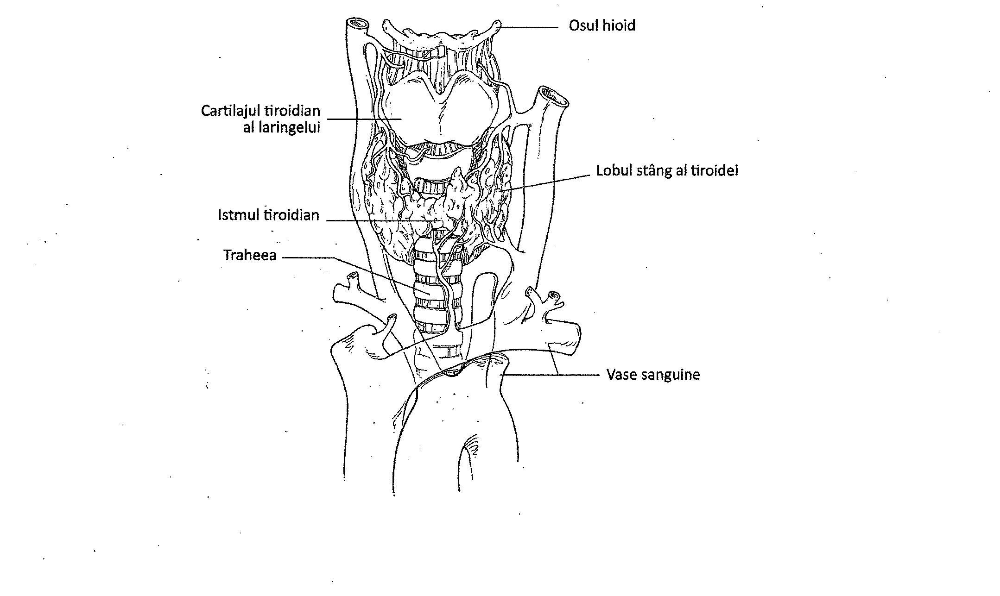
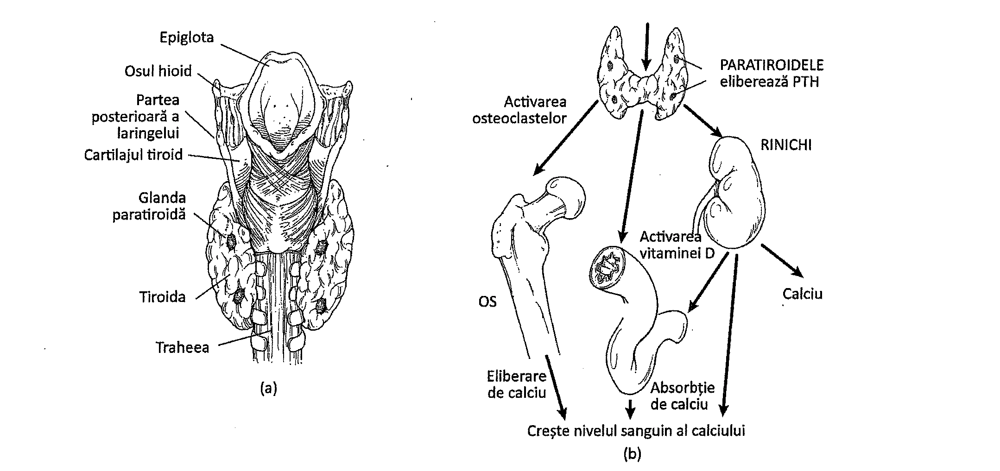
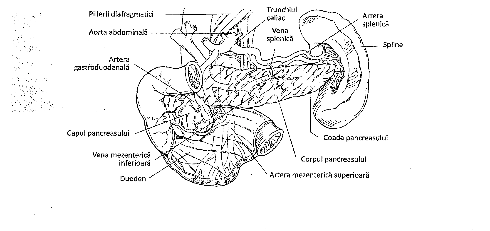
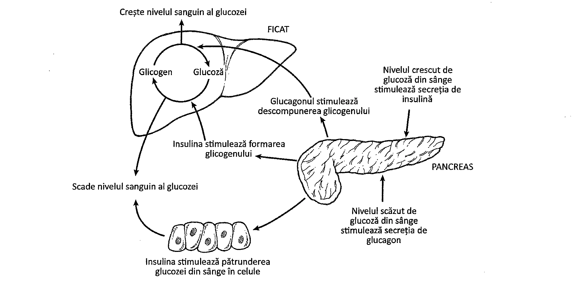
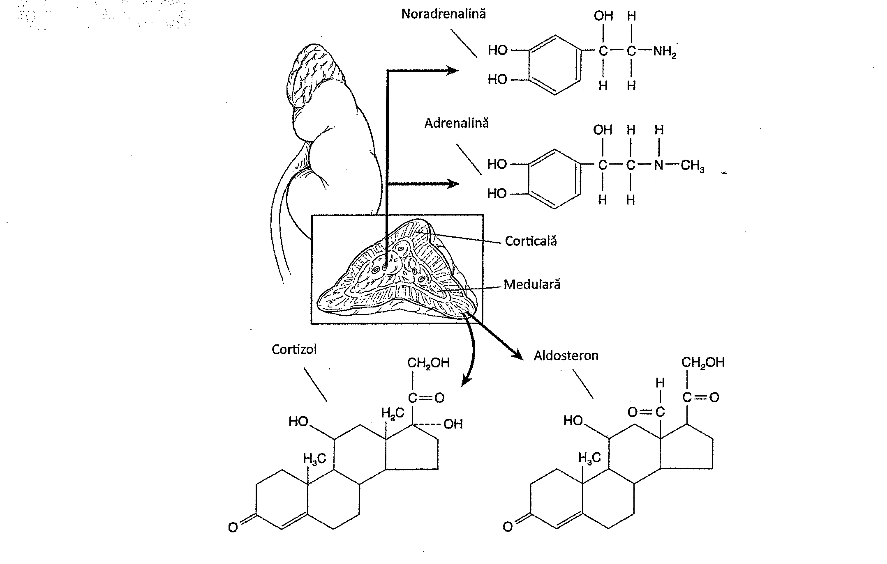
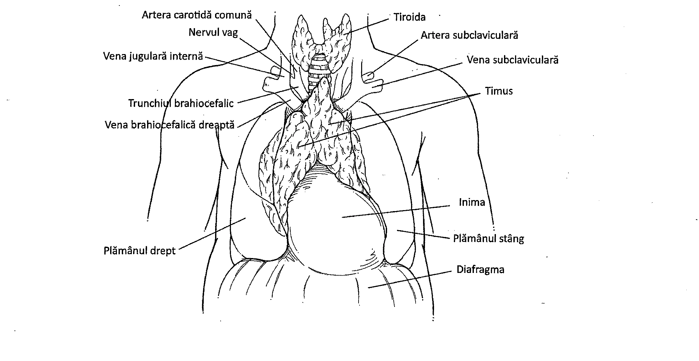

13.1. Descrierea generală a hormonilor
Sistemul endocrin este alcătuit din glande endocrine și din celule endocrine dispuse difuz în diferite țesuturi. Toate acestea secretă hormoni pe care îi elimină în sânge, cu scopul de a menține homeostazia. Sângele transportă hormonii până la organele țintă, unde aceștia produc modificări biochimice și fiziologice. Spre exemplu, hormonii stimulează creșterea și dezvoltarea, favorizează retenția de apă, ridică sau scad nivelul glucozei din sânge, favorizează retenția de sodiu și induc dezvoltarea caracteristicilor sexuale masculine. La nivelul celulelor țintă, hormonii se leagă de receptori specifici aflați pe suprafața sau în interiorul celulei.
Glandele endocrine produc două tipuri de hormoni: hormoni steroidieni (steroizi) și hormoni non-steroidieni (Tabelul 13.1).
Hormonii steroidieni sunt alcătuiți din lipide sintetizate din colesterol. Ei au o structură inelară, complexă, alcătuită din atomi de carbon și hidrogen. Exemple de astfel de hormoni sunt cortizolul, cortizonul, estrogenii, progesteronul și testosteronul.
Hormonii non-steroidieni includ proteine, peptide și amine. Hormonii proteici sunt alcătuiți din lanțuri de aminoacizi conectate între ele prin legături peptidice, și includ insulina secretată de pancreas, calcitonina secretată de glanda tiroidă și hormonii hipofizari. Hormonii peptidici conțin lanțuri mai scurte de aminoacizi, fiind reprezentați de hormonul antidiuretic (ADH) și oxitocină. Hormonii aminici sunt derivați din aminoacizi. Exemple de astfel de hormoni sunt tiroxina, sintetizată în glanda tiroidă, și adrenalina (epinefrina) din glandele suprarenale.
Cercetarea științifică a demonstrat că hormonii steroizi se dizolvă în fosfolipide și trec cu ușurință prin membrana celulară. În citoplasma celulelor țintă, hormonii se combină cu proteine, iar complexul rezultat stimulează activitatea unor gene care codifică tipuri specifice de molecule de ARN mesager. Acest fenomen conduce la declanșarea sintezei proteice, determinând modificări ale metabolismului celular.
Majoritatea hormonilor proteici, peptidici și aminici acționează ca mesageri primari ce se leagă de receptori aflați pe membrana celulelor țintă. Astfel, ei intensifică activitatea anumitor enzime membranare. O astfel de enzimă este adenilat ciclaza (Figura 13.1). După activare, adenilat ciclaza transformă moleculele de ATP în molecule de adenozin monofosfat ciclic (cAMP). Aceste molecule, denumite mesageri secundari, se dispersează în celulă și accelerează anumite modificări celulare, precum creșterea sintezei proteice, alterarea permeabilității membranare și activarea anumitor enzime.
| Tipuri de hormoni | Exemple |
|---|---|
| Steroizi | Estrogeni, testosteron, aldosteron, cortizol |
| Non-steroizi — Amine | Noradrenalina (norepinefrină), adrenalina (epinefrină) |
| Non-steroizi — Peptide | ADH, oxitocină |
| Non-steroizi — Proteine | Insulină, somatotrop, prolactină |
| Non-steroizi — Glicoproteine | FSH, LH, TSH |

Unele glande endocrine prezintă mecanisme de acțiune autocrine și paracrine. Mecanismul autocrin se traduce prin acțiunea unui hormon asupra celulei ce l-a secretat. În cadrul mecanismului paracrin, hormonii secretați de o celulă endocrină acționează asupra celulelor din imediata vecinătate.
13.2. Hipofiza (glanda pituitară)
Hipofiza (Figura 13.2) este o glandă de mărimea unui bob de mazăre, situată în partea inferioară a encefalului, într-o depresiune a osului sfenoid denumită sella turcica (șaua turcească), imediat înapoia chiasmei optice. Glanda hipofiză are un lob anterior, denumit adenohipofiză, și unul posterior, neurohipofiză. Neurohipofiza nu este o glandă endocrină propriu-zisă, ci un rezervor al hormonilor produși de către hipotalamusul situat deasupra ei. O tijă, denumită infundibul, leagă hipofiza de partea inferioară a hipotalamusului. Celulele neurosecretoare din hipotalamus sintetizează neurohormoni, care sunt transportați de-a lungul infundibulului în neurohipofiză, unde sunt stocați temporar. Acești hormoni sunt eliberați ca răspuns la stimulii proveniți din neuronii hipotalamici.

Primul hormon eliberat de neurohipofiză este hormonul antidiuretic (ADH), cunoscut și sub denumirea de vasopresină. ADH-ul acționează asupra tubilor renali, stimulând reabsorbția apei și determinând astfel creșterea volumului și a presiunii sanguine. Secreția scăzută (hiposecreția) de ADH are ca rezultat diabetul insipid, caracterizat prin producere excesivă de urină și senzație excesivă de sete.
Al doilea hormon eliberat de neurohipofiză este oxitocina. Celulele țintă ale acestui hormon sunt fibrele musculare netede din uter și glandele mamare, el stimulând astfel contracțiile uterine și eliminarea laptelui. La femeile ce alăptează, secreția de oxitocină este reglată parțial prin actul suptului.
Lobul anterior al hipofizei (adenohipofiza) produce câțiva hormoni cu importanță majoră. Adenohipofiza este controlată de către hipotalamus, care secretă hormoni stimulatori și hormoni inhibitori, eliberați în vasele sistemului port hipotalamo-hipofizar. Hormonii sintetizați de hipotalamus ajung astfel în hipofiză (Figura 13.3). Hormonii stimulatori cresc rata de sinteză și de eliberare a hormonilor hipofizei anterioare, pe când hormonii inhibitori o diminuează. Hormonii hipofizei anterioare controlează alte glande endocrine, motiv pentru care hipofiza este considerată glanda „dirijor" a sistemului endocrin. Hormonii care controlează alte glande endocrine se numesc hormoni tropi.
Primul hormon adenohipofizar, hormonul de creștere uman (HGH - Human Growth Hormone) este cunoscut și sub denumirea de hormon somatotrop (STH). Acesta accelerează creșterea organismului prin stimularea introducerii aminoacizilor și a proteinelor în celule, prin promovarea sintezei proteice și mobilizarea grăsimilor. Hormonul somatotrop este o proteină alcătuită din 191 de aminoacizi. Secreția de STH este inhibată de nivelul sanguin crescut al hormonului.

Deficitul de STH în copilărie cauzează nanism hipofizar, iar excesul gigantism. Excesul de STH la adulți are ca rezultat acromegalia, o afecțiune caracterizată prin schimbarea fizionomiei și a aspectului fizic al unei persoane, ca urmare a îngroșării oaselor și a creșterii exagerate a țesuturilor moi. Aceste modificări au loc în special la nivelul feței, mâinilor și a labelor picioarelor.
Al doilea hormon adenohipofizar este hormonul stimulator tiroidian (TSH). Acest hormon reglează dezvoltarea glandei tiroide și stimulează captarea iodului de către aceasta. De asemenea, TSH-ul controlează sinteza și eliberarea hormonilor tiroidieni, el fiind, astfel, un hormon trop.
Al treilea hormon adenohipofizar este hormonul adrenocorticotrop (ACTH), un alt hormon trop. Țesutul țintă al ACTH-ului este zona corticală a glandei suprarenale. La acest nivel, ACTH-ul influențează creșterea tisulară și stimulează secreția unor hormoni numiți glucocorticoizi.
Al patrulea hormon adenohipofizar este prolactina. Acest hormon acționează asupra glandelor mamare, stimulând producerea laptelui pentru alăptarea nou-născutului.
Ultimii hormoni adenohipofizari sunt hormonii gonadotropi: hormonul foliculostimulant (FSH) și hormonul luteinizant (LH), care au efecte asupra gonadelor (organele sexuale). FSH acționează asupra ovarelor și testiculelor. La femei, FSH-ul stimulează dezvoltarea foliculilor ovarieni în vederea producerii ovulelor, iar la bărbați stimulează producerea spermatozoizilor. LH stimulează, la femei, maturarea foliculilor ovarieni și ovulația. De asemenea, stimulează secreția de estrogeni și progesteron de către corpul galben (Capitolul 23). La bărbați, LH stimulează producerea testosteronului la nivel testicular. (Figura 13.3 prezintă, pe scurt, țesuturile țintă ale hormonilor adenohipofizari). Atât FSH-ul, cât și LH-ul, sunt hormoni tropi (Tabelul 13.2 prezintă, pe scurt, hormonii hipofizari).
| Hormonul | Organul/organele țintă | Efecte principale |
|---|---|---|
| Lobul anterior: | ||
| Hormonul de creștere sau somatotrop (STH) | Țesuturile întregului organism | Stimulează creșterea |
| Hormonul stimulator tiroidian (TSH) | Glanda tiroidă | Stimulează producerea tiroxinei |
| Hormonul adrenocorticotrop (ACTH) | Zona corticală a suprarenalei, pielea, ficatul, glanda mamară | Stimulează producerea corticosteroizilor; crește rata metabolismului, stimulează depunerea glicogenului în ficat, pigmentarea pielii, producerea laptelui |
| Prolactina (PRL) | Glanda mamară | Stimulează producerea laptelui după naștere |
| Hormonul foliculostimulant (FSH) | Foliculul ovarian și tubii seminiferi testiculari | Stimulează creșterea foliculilor și a tubilor |
| Hormonul luteinizant (LH) | Corpul galben (luteal) ovarian și celulele interstițiale din testicul | Stimulează formarea corpului galben (luteal) din folicul; stimulează producția de progesteron în ovare și de testosteron în testicule |
| Hormonul melanocitostimulator (MSH) | Melanocitele cutanate | Controlează pigmentarea pielii |
| Lobul posterior: | ||
| *Vasopresina sau hormonul antidiuretic (ADH) | Mușchii netezi, în special cei ai arteriolelor, și tubii renali | Provoacă vasoconstricție, crescând astfel presiunea sanguină; stimulează reabsorbția apei în rinichi |
| *Oxitocina | Uterul și ductele din glanda mamară | Stimulează contracția uterului, dacă aceasta este inițiată de hormonii ovarieni; stimulează ejecția laptelui de către glanda mamară |
*hormoni produși de hipotalamus și eliberați de către neurohipofiză.
13.3. Glanda tiroidă
Glanda tiroidă este situată în țesuturile moi ale gâtului, în fața laringelui. Este compusă din doi lobi laterali interconectați prin intermediul unei benzi de țesut numită istm. Vârful fiecărui lob se situează lateral de treimea inferioară a cartilajului tiroidian al laringelui, iar baza se află lateral față de porțiunea superioară a traheei. Unitatea funcțională a glandei tiroide este reprezentată de foliculul tiroidian (Figura 13.4).

Glanda tiroidă secretă trei hormoni principali: tiroxina, triiodotironina și calcitonina. Tiroxina (T4) și triiodotironina (T3) accelerează rata metabolismului celular. La tineri, ei reglează creșterea și stimulează maturarea sistemului nervos. Sinteza acestor hormoni este reglată de hormonul stimulator tiroidian (TSH), secretat de către adenohipofiză.
Hormonii tiroidieni accelerează rata metabolismului celular în tot organismul. Ei stimulează activitatea enzimelor asociate cu metabolismul glucozei și, prin urmare, cresc rata metabolismului bazal, la fel ca și cantitatea de oxigen consumată de către celule și cantitatea de căldură produsă. Acești hormoni stimulează și creșterea numărului de receptori din vasele sanguine, având un rol în menținerea presiunii sanguine.
| Glanda | Localizare | Produși | Organe țintă sau funcție |
|---|---|---|---|
| Hipofiza | Partea inferioară a encefalului | Vezi Tabelul 13.2 | Vezi Tabelul 13.2 |
| Tiroida | Anterior și inferior față de laringe | Tiroxină; Triiodotironină | Celulele din toate țesuturile organismului |
| Tiroida | Anterior și inferior față de laringe | Calcitonină | Crește rapid depunerea de calciu în oase și scade concentrația sanguină a calciului |
| Paratiroida | Pe suprafața posterioară a glandei tiroide | Parathormon | Reglează activitatea osteoclastelor, crescând concentrația calciului în sânge |
| Pancreasul (insulele Langerhans) — celulele beta | În cavitatea abdominală, posterior de stomac | Insulină | Facilitează pătrunderea glucozei în celule, în special la nivel hepatic |
| Pancreasul (insulele Langerhans) — celulele alfa | În cavitatea abdominală, posterior de stomac | Glucagon | Facilitează degradarea glicogenului în ficat și eliberarea glucozei în sânge |
| Suprarenala | Polul superior al rinichiului | ||
| Suprarenala — zona medulară | Zonă internă a glandei, origine nervoasă | Adrenalină; Noradrenalină | Acționează în reacțiile de urgență („fight or flight”) |
| Suprarenala — zona corticală | Zonă periferică a glandei | Glucocorticoizi | Reglează metabolismul glucidelor și al proteinelor |
| Suprarenala — zona corticală | Zonă periferică a glandei | Mineralocorticoizi | Reglează echilibrul sodiului și al electroliților |
| Suprarenala — zona corticală | Zonă periferică a glandei | Hormoni sexuali | Influențează hormonii sexuali secundari |
| Epifiza | În mezencefal, pe peretele superior al ventriculului III | Melatonină | Organele reproducătoare, în special ovarele |
Pentru ca tiroida să poată produce tiroxină și triiodotironină este necesar aportul alimentar de iod. Dacă iodul este indisponibil, tiroida crește în dimensiuni. Această creștere în dimensiuni se numește gușă. Suplimentarea iodului alimentar ameliorează această afecțiune.
Hiposecreția de tiroxină la copii are ca rezultat cretinismul. Simptomele cretinismului includ creșterea deficitară, trăsături faciale îngroșate, creștere osoasă anormală, retard mental și letargie generală. Tratamentul în cretinism este reprezentat de hormonoterapia cu tiroxină. La adulți secreția insuficientă de tiroxină duce la mixedem. Simptomele acestei boli includ creșterea în greutate, ritm cardiac lent, rată metabolică redusă, lipsă de energie și o stare de slăbiciune generalizată. Un exces de tiroxină și triiodotironină duce la boala Graves (gușa exoftalmică). Printre simptome se numără pierderea în greutate, accelerarea pulsului, creșterea apetitului și creșterea ratei metabolice. Uneori, se observă exoftalmie (globi oculari proeminenți).
Cel de-al treilea hormon tiroidian este calcitonina (Tabelul 13.3). Calcitonina reglează nivelul de calciu din sânge și este antagonistul parathormonului secretat de glanda paratiroidă. Calcitonina scade nivelul calciului în sânge și crește depunerea acestuia în oase, pe când parathormonul are efecte inverse.
13.4. Glandele paratiroide
Glandele paratiroide sunt reprezentate de patru mici mase de țesut glandular localizate pe fața posterioară a glandei tiroide. Fiecare dintre ele are aproximativ mărimea unui bob de mazăre (Figura 13.5). Ele secretă parathormonul (PTH) sau hormonul paratiroidian. Parathormonul crește nivelul de calciu din sânge. El are acțiune antagonistă față de calcitonină, crescând resorbția calciului din oase prin stimularea activității osteoclastelor. De asemenea, el influențează reabsorbția calciului în tubii renali și la nivelul mucoasei intestinale.
Parathormonul stimulează activarea renală a vitaminei D, care va regla apoi absorbția calciului în intestin. Bolile datorate hipersecreției de parathormon se datorează, în general, unei tumori paratiroidiene. Semnele caracteristice acestor boli sunt deformările și scăderea densității oaselor.

13.5. Pancreasul
Pancreasul este un organ glandular de dimensiuni mari, cu o formă aplatizată, localizat în cavitatea abdominală, posterior de stomac și de peritoneu (Figura 13.6). Acest organ are atât funcție digestivă cât și funcție endocrină. Funcția digestivă a pancreasului constă în producerea de enzime digestive pancreatice, iar cea endocrină în producerea a doi hormoni principali, insulina și glucagonul. În pancreas există mult mai multe celule ce produc enzime digestive decât celule ce produc hormoni. Acestea din urmă se găsesc în interiorul insulelor pancreatice (insulele Langerhans), despre care se spune că sunt „insule" de țesut endocrin într-o „mare" de țesut ce produce enzime digestive.
Insulina este un hormon proteic compus din 51 de aminoacizi asamblați în două lanțuri proteice. Acest hormon acționează în întregul organism, stimulând intrarea moleculelor de glucoză în celule și, astfel, scade nivelul sanguin al glucozei. Insulina este produsă de către celulele beta din insulele Langerhans, după ingestia de alimente.

Când celulele beta sunt inactive, organismul este lipsit de insulină, dezvoltându-se o afecțiune numită diabet zaharat (tip 1). Un alt tip de diabet (tip 2) apare când celulele din organism dispun de un număr redus de receptori pentru insulină. În ambele tipuri de diabet, în celule nu pătrunde suficientă glucoză pentru un metabolism normal, rezultatul fiind lipsa de energie la nivelul întregului organism și o stare de oboseală. Rinichiul permite eliminarea glucozei aflate în exces în sânge, prin urină. Astfel, concentrația glucozei în urină crește, iar rinichii elimină multă apă pentru a o dilua. Prin urmare, o persoană diabetică va urina frecvent și va suferi de o senzație excesivă de sete.
Cel de-al doilea hormon pancreatic este glucagonul (Figura 13.7). Glucagonul este produs de celulele alfa din insulele Langerhans în lipsa aportului alimentar. Glucagonul stimulează degradarea glicogenului (glicogenoliză) la nivelul ficatului. Acest proces are ca rezultat molecule de glucoză, care sunt eliberate în sânge. Astfel, glucagonul crește nivelul sanguin al glucozei, pe când insulina îl scade. Glucagonul promovează și gluconeogeneza, ce reprezintă formarea glucozei din aminoacizi și molecule lipidice acide. Efectul acestui proces este îndepărtarea aminoacizilor din sânge.

13.6. Glandele suprarenale
Glandele suprarenale sunt glande pereche localizate la polul superior al rinichilor. Fiecare glandă suprarenală are două porțiuni: medulara, în centru și corticala, la periferie (la exterior). Medulara secretă hormoni cu acțiune complementară cu cea a sistemului nervos simpatic, iar corticala secretă hormoni ce contribuie la reglarea echilibrului mineral și energetic, și a funcțiilor reproducătoare ale organismului.
Hormonii zonei corticale sunt denumiți glucocorticoizi și mineralocorticoizi. Mineralocorticoizii au ca reprezentant aldosteronul (Figura 13.8). Acești hormoni reglează concentrația de electroliți, în special sodiu și potasiu, din sânge și fluidele corporale. La rândul ei, secreția de mineralocorticoizi este reglată de către concentrația sanguină a electroliților. Glucocorticoizii au efecte asupra metabolismului carbohidraților, proteinelor și lipidelor. În același timp, ei stimulează vasoconstricția și au rol antiinflamator. Unul din cei mai importanți glucocorticoizi este cortizolul. Secreția glucocorticoizilor este reglată de către hormonul adrenocorticotrop (ACTH) din adenohipofiză printr-un mecanism de feedback negativ.

Corticala glandelor suprarenale produce și hormoni steroizi, care influențează caracterele sexuale. Acești hormoni suplimentează cantitatea, mult mai mare, de hormoni sexuali produși de către gonade.
Medulara glandei suprarenale secretă o serie de hormoni aminici denumiți catecolamine, ce includ adrenalina (epinefrina) și noradrenalina (norepinefrina). Ambii hormoni pregătesc organismul pentru efort fizic intens și reacția „fight or flight". În acest sens, ambii hormoni acționează împreună cu sistemul nervos simpatic.
Hipo- sau hipersecreția de hormoni corticali provoacă diverse boli. Boala Addison, care apare în urma hiposecreției de glucocorticoizi și mineralocorticoizi, este însoțită de un dezechilibru al sodiului și al potasiului, un ten închis la culoare, deshidratare, hipotensiune și o stare generală de slăbiciune. Hipersecreția de glucocorticoizi are ca rezultat sindromul Cushing, care este însoțit de umflarea feței, hipertensiune și slăbiciune musculară generalizată.
13.7. Alte glande endocrine
Sistemul endocrin include și ovarele și testiculele. În ovare, celulele foliculare secretă estrogeni și progesteron (hormoni feminini), care influențează dezvoltarea caracterelor sexuale secundare feminine (Capitolul 23). La bărbați, testiculele secretă testosteron și alți androgeni (hormoni masculini), care influențează caracterele sexuale secundare masculine (Capitolul 22).
O altă glandă endocrină este epifiza (glanda pineală), o glandă mică situată în mezencefal, pe peretele superior al ventriculului III. Epifiza este legată de talamus și secretă un hormon numit melatonină. Se crede că melatonina reglează secreția altor hormoni și că poate influența ciclul zi-noapte (ritmul nictemeral).
Timusul este un organ localizat în mediastinul superior, înapoia sternului (Figura 13.9). El secretă timozine, o serie de hormoni implicați în maturarea și dezvoltarea limfocitelor T, care fac parte din sistemul imunitar al organismului (Capitolul 16). Timusul este bine dezvoltat la făt și nou-născut, dar dimensiunile sale scad cu vârsta.

În epiteliul care tapetează stomacul și intestinul subțire se găsesc câteva celule endocrine digestive. Aceste celule secretă gastrină, secretină și alți hormoni implicați în procesele digestive (Capitolul 18).
În anumite organe precum ficatul, rinichiul, inima și plămânii, există celule endocrine ce secretă cantități extrem de mici de hormoni non-steroizi, denumiți prostaglandine. Prostaglandinele au diverse efecte asupra țesuturilor, ca de exemplu contracția țesutului muscular neted.
Celulele rinichiului produc un hormon numit eritropoetină, care stimulează sinteza hematiilor în măduva osoasă roșie.